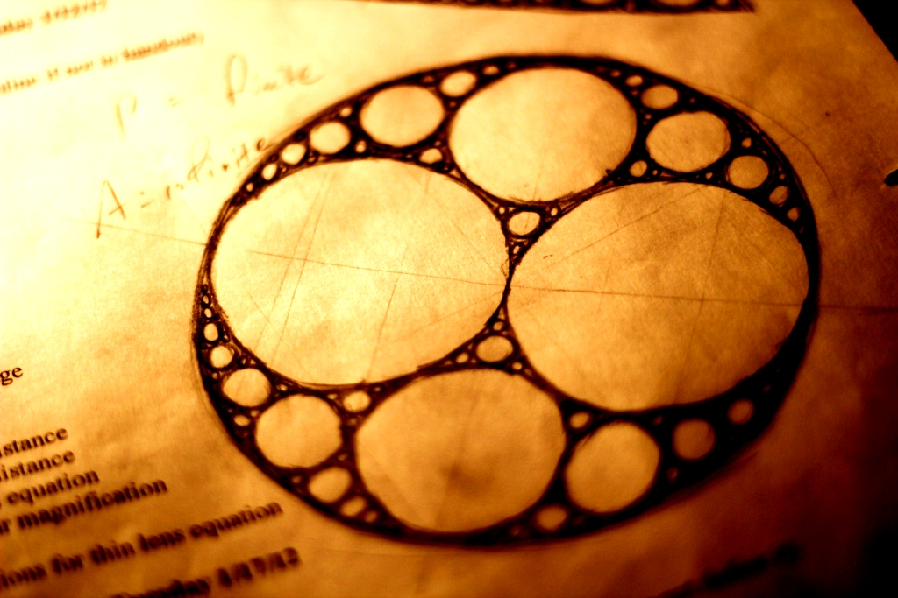
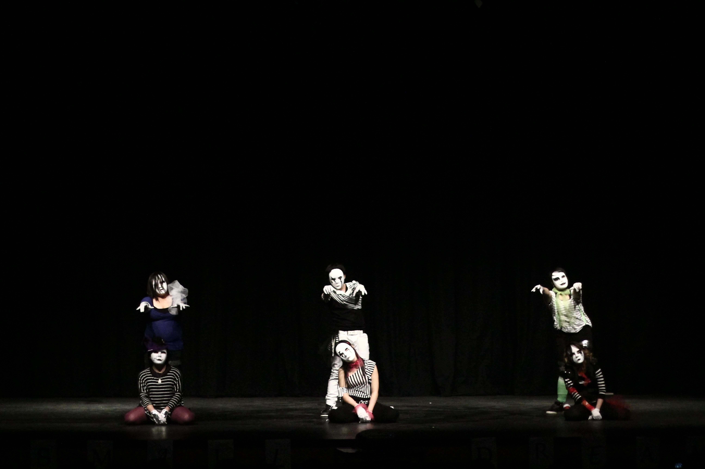
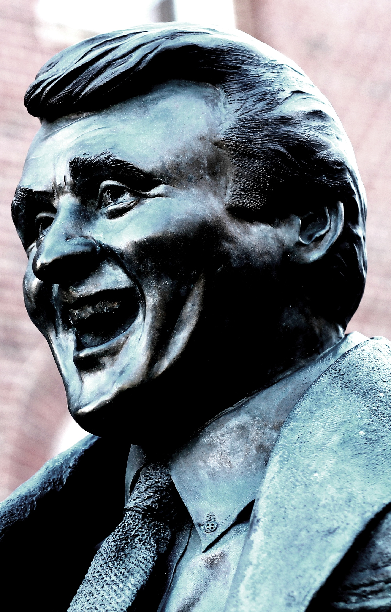

Selected photography. Some are raw, others post-edited.
One World Trade CenterFour World Trade CenterOld scribblings illuminated by a laptopA scruffle with an innocent onlookerCosmos-esque July 4th, 2013 fireworksThe first snow one winter in Saint Paul

A doodle of an Apollonian gasketA sepia view from the Highline in New York CityA lone light postThe frontal facade of the Admiralty Arch in London

A K-Pop inspired performanceAn exposure shot of Massachusetts Avenue in CambridgeA second shotA third shotThe 2013 Bastille Day parade in New York CityAnother shot of the paradeRockefeller Center in New York CityA direct shot of Rockefeller Center

A bronze statue of a jovial Herb Brooks in Saint PaulA letter-boxed shot of MIT from Killian CourtA preacher in Times Square